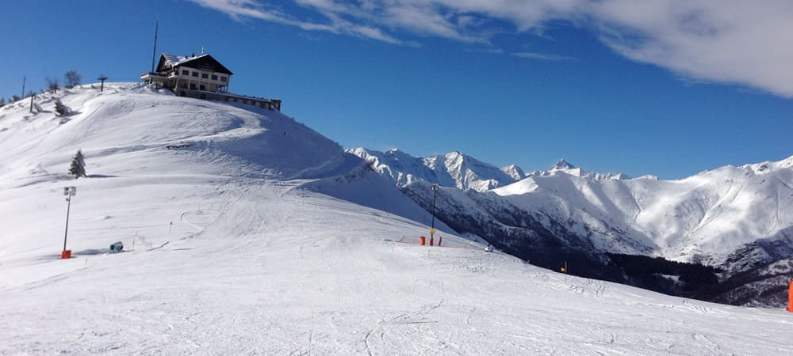
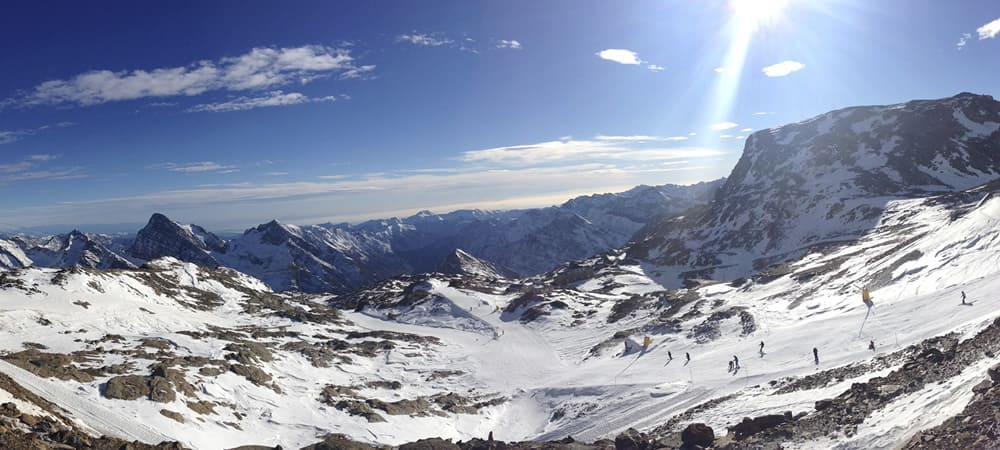
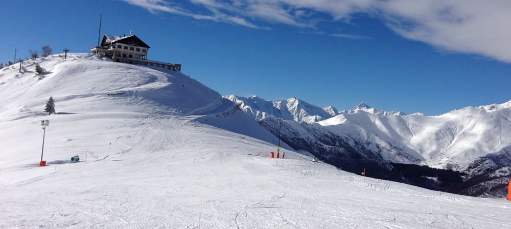
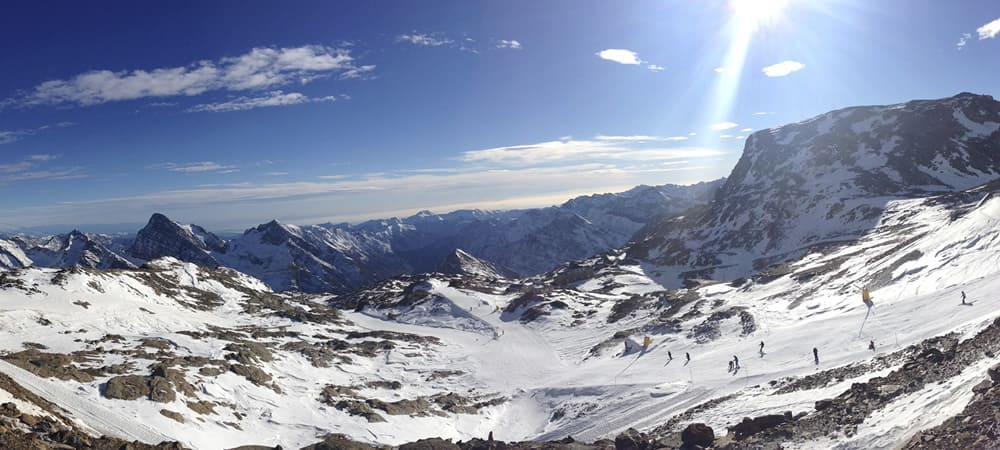

Storia
Il primo snowboard moderno è considerato lo snurfer (nome che fonde snow e surfer), costruito dall'ingegnere Sherman Poppen per far divertire i figli. L'intento iniziale dell'ingegnere era di produrre una versione casalinga del monosci,

ma i figli lo "cavalcavano" trasversalmente dando così l'idea di surfisti sulla neve e così l'inventore pensò di adattare un vero surf da onda aggiungendo dei bordi metallici e di brevettare l'attrezzo col nome, appunto, di snurfer.
Nel 1979 tenne al Pando Ski Lodge, nel Michigan, il primo World Snurfing Championship (Campionato mondiale di snurfing) a cui partecipò anche Jake Burton Carpenter con una tavola di sua costruzione. Tuttavia ci furono molte proteste per la sua partecipazione alla gara con una tavola diversa dallo snurfer, venne perciò istituita una sezione a parte, che fu ovviamente vinta da Carpenter, in quanto unico partecipante. Quella gara è considerata la prima vera gara di snowboard.
Fonte Wikipedia